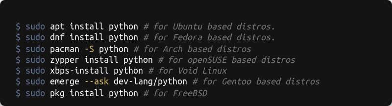
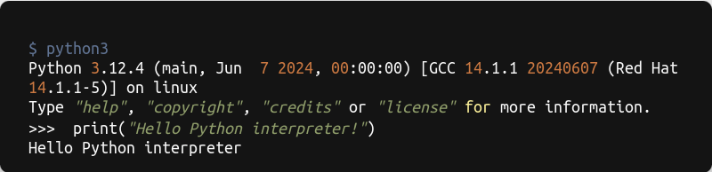

At the start of the chapter, the book talks about giving us the basics of Python programming and then showing us how to install the necessary programs and tools. After that, it'll guide us through creating a Python program called "hello_world.py".
Setting Up Your Programming Environment
Python works or gets installed in slightly different ways depending on the operating system. The book also makes it clear that it will delve into the specifics in the upcoming chapters.
Python Versions
Like other programs, Python also keeps developing, updating, and becoming more powerful. The book claims that 3.7 is the latest version of Python as of the book's writing. At the time of this blog post's writing, the latest version of Python is 3.12, and 3.13 is in the pre-release state. At this point in the book, we will determine whether Python is already installed on our system. It was also mentioned that there are still old projects using Python 2, but we need to use Python 3.
Running Snippets of Python Code
You can run Python's interpreter in a terminal window, allowing you to try bits of Python code without having to save and run an entire program.
To give an example of this:

The ">>>" prompt tells you to use the terminal window, and the bold text shows the code to type and then execute by pressing enter. Most examples in the book are small, self-contained programs that you'll run from your text editor, because you'll write most of your code in the text editor. Sometimes basic concepts will be shown in snippets run through a Python terminal session to demonstrate particular concepts more efficiently. When you see three angle brackets in a code listing, you're looking at code and output from a terminal session. We'll try coding in the interpreter on your system in a moment.
We’ll also use a text editor to create a simple program called Hello World! that has become a staple of learning to program. There’s a long-held tradition in the programming world that printing a Hello world! message to the screen as your first program in a new language will bring you good luck. Such a simple program serves a very real purpose. If it runs correctly on your system, any Python program you write should work as well.
In a moment, we will write our first program that will output “Hello World!”, a tradition among young programmers.
About Integrated Development Environments
Under this heading, the book tells us about the Sublime Text Editor, but I will tell you about the IDE's you can use. IDE stands for “Integrated Development Environment” and are the text editors in which we usually develop programs. They have a wide range of plugins and an integrated version control system.
PyCharm is an integrated development environment (IDE) for Python, specifically designed for professional developers. It comes in two editions: Community and Professional. The Community edition is free and open-source, suitable for pure Python development, whereas the Professional edition offers advanced features like web development, database support, and scientific tools. On the other hand, VS Code is a lightweight, open-source code editor developed by Microsoft, with a strong focus on simplicity and performance. It supports various programming languages through extensions and has a large community contributing to its ecosystem. Spyder is an open-source IDE designed for scientific programming in Python. It integrates essential packages like NumPy, SciPy, and Matplotlib for data analysis, making it an excellent choice for scientists and engineers. Each of these IDE's caters to different needs and preferences within the Python development community.
Which IDE you use is completely up to your freedom. If you are a beginner programmer, I recommend VSCode or PyCharm Community. Experienced programmers can also use PyCharm Professional or Spyder. If you consider using Sublime Text Editor, here is the explanation from the book:
Installing Python on Different Operating Systems
I will explain these parts in the shortest and simplest way.
Windows
Download the latest Python version from Python's official website and run the installation wizard. Select the “Add Python to PATH” option and click “Install Now” to install.
Linux/FreeBSD
You can install the "python" package through your package manager for your distribution.
MacOS
Download the latest Python version from the official website and run the installation wizard. Follow the prompts, and Python will be installed on your system.
Running Python on Different Operating Systems
Windows

Linux/FreeBSD/MacOS

As a Linux user, I will use Linux commands throughout the guide.
Running Hello World Program
Before we write out first code, we need to create a hello_world.py file. hello_world is our file name and .py is the extension indicating that our file is Python code. After we create hello_world.py file, open it and enter this code line:
hello_world.py
Now save the file and run our first program.
Output of hello_world.py

If you can't see anything after running the program, something might have gone wrong. Check every single character on the line you entered. Maybe you accidentally capitalized "print" or forgot to add one or both of the quotation marks or parentheses. Keep in mind that programming languages are picky about their syntax, so if you don't get it right, you'll definitely get errors. If you're struggling to get the program to run, check out the suggestions in the next section.
Troubleshooting hello_world.py
If you're having trouble running hello_world.py, here are some solutions to try:
- Check the error report traceback provided by Python for clues on what's causing the issue.
- Take a short break and then carefully review the code for any syntax errors like missing colons or mismatched quotes.
- Consider starting over by deleting hello_world.py and creating it again from scratch.
- Ask someone to follow the steps with you, as they might catch a missed step.
- Seek help from someone who knows Python or access the setup instructions online.
- Use resources like forums and live chat sites for assistance with any issues.
Running hello_world.py from Terminal
You can also run our hello_world.py program from terminal. First we have to go to the directory where the hello_world.py file is located. Then we will run our file using the python3 command:

And that's it for the first data science guide blog post. Hope you enjoy and learned from this guide. In the next section, we'll take a look at the essentials of programming: variables and data types. So stay tuned for next blog post of Data Science Guide.